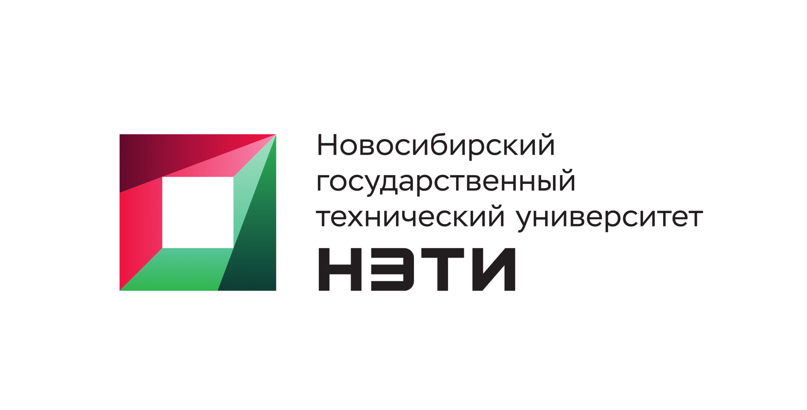

Новосибирский Государственный Технический Университет
Кафедра Автоматизированных Систем Управления
Лабораторная работа №1 Принципы работы веб-приложений
Выполнили студенты: Малахов Д.:Е., Поливода М.А.
Принял преподаватель: Кирьянова Екатерина Сергеевна
Ссылка на GitHub
Скриншот работы webpack-dev-server
Скриншот выполненного задания 3
Скриншот со списком вакансий полученных по API